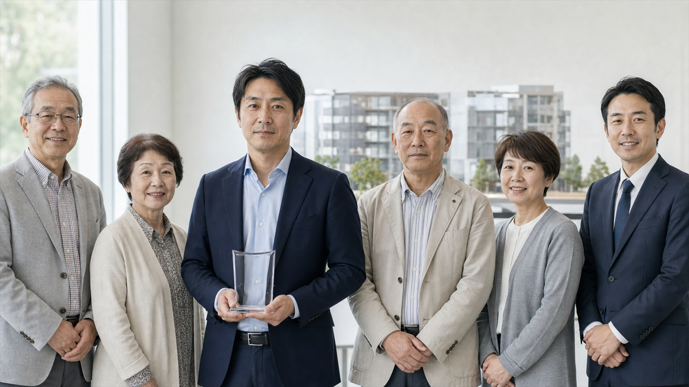

地域
東湾都市開発・竹内直哉氏らに地域共創住宅賞 旧住民の意見集約を評価
本形町二丁目旧住宅地再整備事業で、移転後の暮らしと戻り入居の希望を一つの計画へまとめた取り組みが評価された。

首都圏まちづくり協会は18日、本年度の地域共創住宅賞に、本形町二丁目旧住宅地再整備事業の関係者を選んだ。長く暮らした住民の移転、戻り入居、共同空間への希望を個別に聞き取り、低層の共同住宅計画へまとめた過程を評価した。
事業を担当した東湾都市開発の竹内直哉氏は、旧住宅地の住民ごとに異なる事情を一覧化し、区、設計者、施工者との協議窓口を一本化した。選考委員は「反対や不安を消すのではなく、意見の違いを記録したまま合意点を探した」と講評した。
竹内氏は表彰後、「住んでいた方を一つの意見にまとめたのではない。移転する方、戻る方、周辺で暮らす方が、同じ資料を見て話せる状態をつくることに時間を使った」と話した。
計画地では地上4階・地下1階、2棟の共同住宅が予定されている。事業者は販売準備と並行し、区の公開資料をもとに工事と防災条件を説明するとしている。